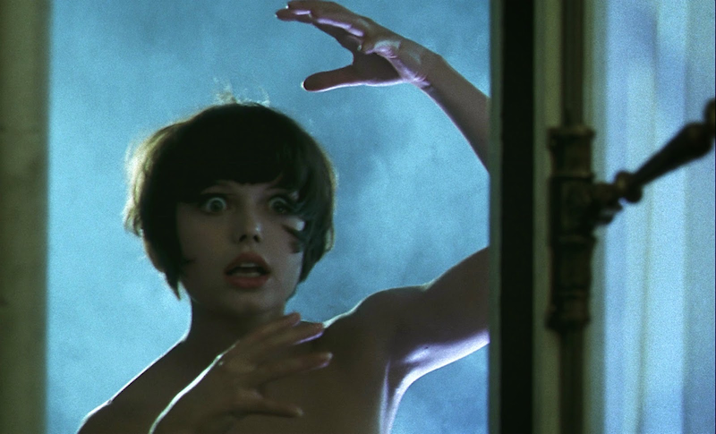
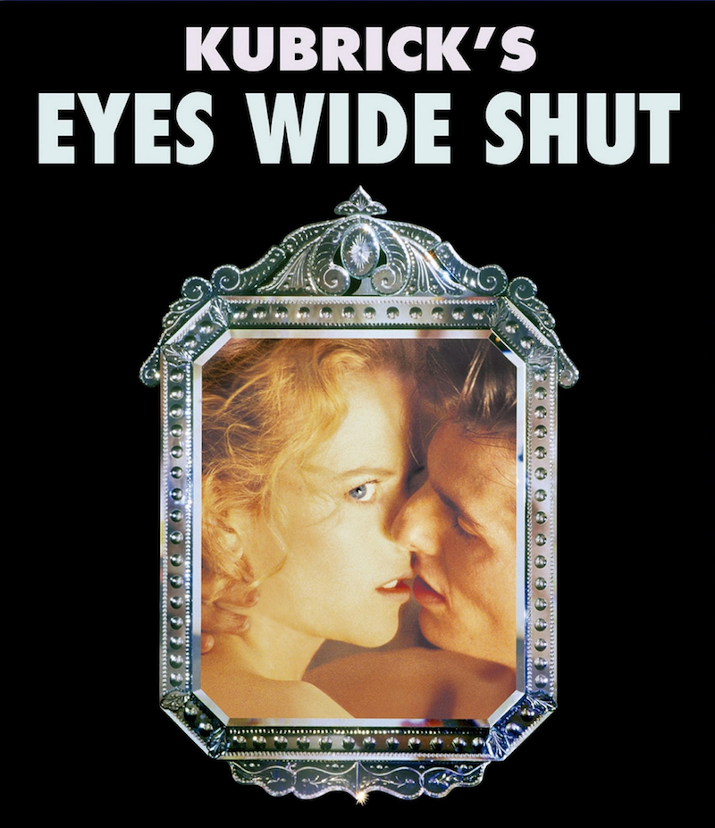
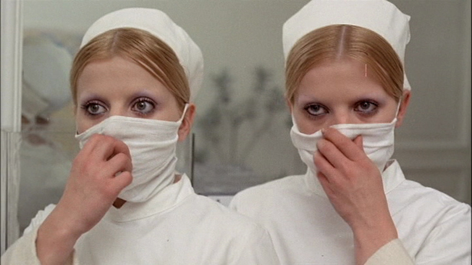

昼下がりの前衛的エロ映画
まるで平日の昼下がりに見る淫夢のような映画体験
ヴァンピロス･レスボスVampyros Lesbos
1971年/西ドイツ、スペイン/89min
監督･脚本･音楽：ヘス・フランコ
出演：ソルダード･ミランダ、エヴァ･ストロンベルグ
イスタンブールを舞台に、美しいエリートＯＬと妖しい女吸血鬼との愛欲をアンニュイに描く。ストーリーなどは気にせずに風光明媚な地中海のロケーションで艶めく彼女たちの美しい肢体とムード音楽に身を任せよう。平日の昼下がりに観るには最高の映画。
愛のコリーダL'empire des sens
©大島渚プロダクション
1976年/日本、フランス/109min
監督･脚本：大島渚
撮影:伊東英男
出演:藤竜也、松田暎子、中島葵、芹明香、殿山泰司
これほど激しく愛し合った男と女はなかった。いま世界の脚光を浴びる日本の愛の賛歌。愛人を殺害し、その性器を切断して大切に持ち歩いていた阿部定の事件を巨匠大島渚が映画化。本番行為シーンの現像が国内では不可能だったため、フランスで現像し日本まで空輸した。
エデン、その後L'éden et après
1970年/フランス、チェコ、チュニジア/98min
監督･脚本：アラン･ロブ=グリエ
出演:カトリーヌ･ジュールダン、ピエール･ジメール
フランスの学生たちが怪しいオランダ人に性の心理的実験に参加させられ、妄想と幻覚の世界に迷い込む。カフェ、夜の工場、青い空のチュニジアの村を舞台に美しい女優たちのヌードを拝める。ヌーボーロマンの作家アラン･ロブ=グリエの監督作品。
闇の乙女Les lèvres rouges

1971年/ベルギー、フランス、西ドイツ/100min
監督･脚本：ハリー･クメール
出演：デルフィーヌ･セイリグ
ベルギーの曇り空、湿地帯に建つ要塞のようなホテルを訪れたカップルは妖しい女主人と美しいメイドの秘密を知り、闇の世界に足を踏み入れる。素晴らしいロケーションと美しい女優たちに時間を忘れてしまう映画体験。
アイズワイドシャットEyes Wide Shut

©1999 Warner Bros. Entertainment Inc. All rights reserved.
1999年/アメリカ/159min
監督･脚本：スタンリー･キューブリック
出演:トム･クルーズ、ニコール･キッドマン、リーリー・ソビエスキー
内科医トム･クルーズが妻のニコール･キッドマンから秘密の告白を聞き、性の妄想に取り憑かれる。夜の街を彷徨い歩くクルーズは秘密結社の乱交パーティに参加するのだが、そこで知る人生の意味とは？ 巨匠キューブリックの遺作。
紅い唇Lèvres de sang

1975年/フランス/87min
監督･脚本：ジャン･ローラン
出演：ジャン＝ルー･フィリップ、アニー･ブリアンド
幼いころに見た夢の中の女が忘れられない主人公は、ある夜その女を目撃する。そして、その女を追って街を彷徨う。墓場の女吸血鬼たち、夜の水族館、場末の映画館、古城の廃墟。いつか見た夢のような映画体験。
ウォーターパワー アブノーマルスペシャル:エネマ版Water Power:Enema Cut Version

1976年/アメリカ/66min
監督：ショーン・コステロ
出演：ジェイミー･ギリス、Ｃ･Ｊ･ラング
「浣腸には重大な責任が伴う。売女どもを浄化してやる」義憤に駆られた無職男が腐った街ニューヨークを浄化すべく、女たちを襲撃し次々と浣腸する。カナザワ映画祭オールタイム・ベスト第1位作品（同率1位に「ビッグ・スライドショウ」）。また日本公開時には蓮實重彦元東大総長もその年の外国映画ベスト10の中に入れたほどの傑作だ。2012年に当映画祭で上映されたバージョンよりも6分間長いエネマ版を今回特別上映する。